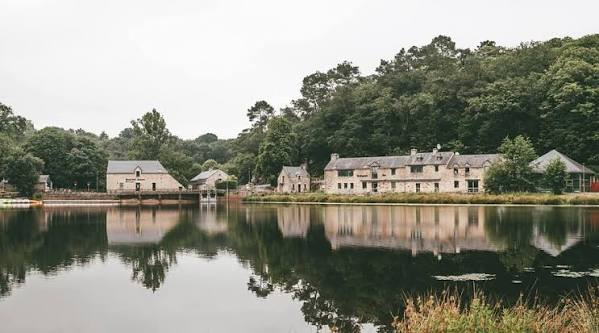

🚴 Séjour Club 2027 à Malansac
Vous êtes intéressé(e) par le séjour ? Faites-nous connaître dès maintenant votre intention de participer.
Pré-réserver ma placeLe traditionnel séjour de printemps se déroulera du mardi 11 mai au vendredi 14 mai 2027, à Malansac, dans le Morbihan.
Le lieu et l’hébergement
Nous serons hébergés au Domaine du Moulin Neuf, sur le territoire de la commune de Malansac, à proximité immédiate de Rochefort-en-Terre, élu « Village préféré des Français » en 2016 et répertorié parmi les « Plus Beaux Villages de France » et les « Petites Cités de Caractère ».
Les hébergements se feront en cottages de 2 ou 4 personnes. Le linge de lit et le linge de toilette seront inclus et déposés dans les chambres.
Les repas seront pris en commun à l’Auberge du Moulin Neuf, située à environ 600 mètres des hébergements, de l’autre côté du lac et accessible à pied par un chemin sécurisé.
Déroulement du séjour
Mardi 11 mai
Arrivée vers 11 h 30. Chacun apportera son pique-nique, qui sera pris en commun, avant une randonnée pédestre ou cyclo l’après-midi. La prise de possession des cottages se fera au retour des randonnées, ceux-ci étant disponibles à partir de 16 h. Le dîner sera pris en commun à l’Auberge du Moulin Neuf.
Mercredi 12 et jeudi 13 mai
Après le petit déjeuner pris en commun, départ pour une randonnée à la journée. Le panier repas sera fourni par l’Auberge du Moulin Neuf. Pensez à prévoir une sacoche de vélo ou un petit sac à dos pour l’emporter. Le soir, nous dînerons ensemble à l’Auberge.
Vendredi 14 mai
Après le petit déjeuner, les cottages devront être rendus pour 10 h, après ménage. La journée sera ensuite libre. Vous pourrez notamment visiter Rochefort-en-Terre, le site naturel classé des Landes de Lanvaux, La Roche-Bernard, La Gacilly, le site classé de l’Île-aux-Pies à Saint-Vincent-sur-Oust, ou simplement rejoindre la côte.
Rochefort-en-Terre étant situé à environ 70 km de Bruz, un départ et/ou un retour à vélo pourra être organisé pour les plus courageux.
Les repas
- Petits déjeuners : pain, brioche, viennoiseries, céréales, confiture, miel, beurre, jus d’orange et boissons chaudes.
- Paniers repas : salade composée, tranche de rôti, fromage, fruit, gâteau sec, bouteille d’eau et pain.
- Dîners : entrée, plat principal, dessert, café et une bouteille de vin pour quatre personnes. Le choix des plats sera communiqué ultérieurement.
Le montant des trois petits déjeuners, deux paniers repas et trois dîners s’élève à 125 € par personne.
Inscription
Si vous êtes intéressé par ce séjour, merci de verser une avance sur le site HelloAsso ou par chèque à remettre à notre trésorier Christophe avant le 12 octobre 2026.
Merci également de confirmer votre inscription auprès de Marc en précisant le type de cottage souhaité. Le nombre de cottages pour deux personnes est relativement limité.
